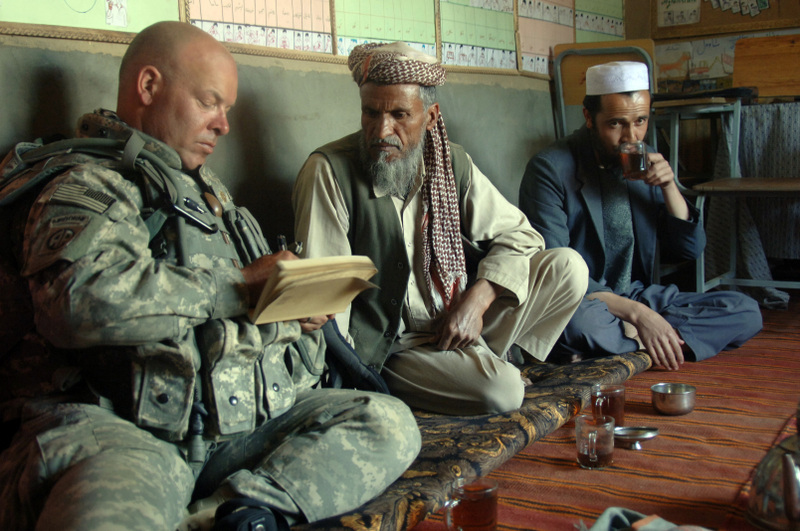
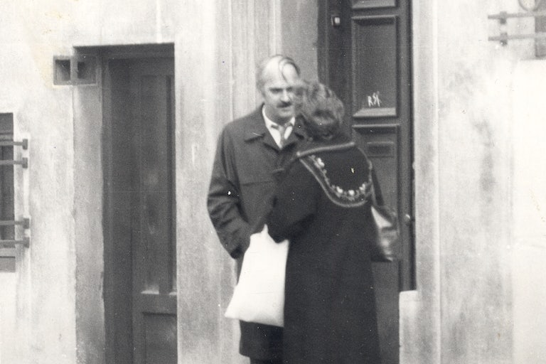

| Ethnography or Espionage? Review of "My Life as Spy: Investigations In A Secret Police File" By Katherine Verdure |
|
After the fall of Romania's communist regime, the new government invited individuals to examine their personal files, which had been meticulously maintained by the secret police. Among those who took advantage of this unusual offer was the American anthropologist Katherine Verdery, who had conducted ethnographic research in the country for her Ph.D. Her research, untouched by explicit topics of communism or the Cold War, had no inkling of subterfuge or sensitive content. Imagine then, Verdery’s astonishment upon unearthing a veritable treasure trove of dossiers, informant letters, copied research, intimate photographs, and detailed records of her every move, all founded on the state's firm belief in her guise as a mischievous US spy.
There's a curious interplay between projection and perception here, a case of seeing what you expect to see, particularly when your occupation primes you for it. As Verdery reads her files, she finds that, during the heights of the Cold War, her minders had pegged her as a US spy. As tensions with Hungarians in Romania later escalated, she was reframed as an American spy with Hungarian roots. And when internal dissidents came under closer scrutiny, she was recast as an instigator of civil discord. Yet, Verdery's response to these attributions is far from simple. She expresses an unsettling kinship with her supposed counterparts; after all, isn't there an argument to be made about the blurry lines distinguishing anthropologists from spies, who also infiltrate communities to gather information? Verdery's own case only strengthens this comparison, and she finds herself pondering the perception of anthropologists as de facto spies, but for the existence of ethics boards, perhaps.
This is far from a baseless association, given the long history of anthropologists serving as government agents or even spies. In December 1919, Franz Boas, widely regarded as the father of American anthropology, sparked a controversy by accusing unnamed colleagues of espionage activities in Central America during World War I. His accusations, outlined in a letter published by 'The Nation' under the headline 'Scientists as Spies,' lambasted these individuals for 'prostituting science.' The ethical implications he raised continue to reverberate within the field. Boas's own student, Ruth Benedict, was later contracted by the U.S. government to collect 'cultural intelligence' on Japan during World War II and subsequently worked with the RAND Corporation and the Office of Naval Research during the Cold War. More recently, the American Anthropological Association faced scrutiny for its members' involvement in the U.S. military's 'Human Terrain System,' a counterinsurgency program in Afghanistan and Iraq post-9/11. As anthropologists find increasing employment opportunities in corporate settings and programs with governmental obligations, the AAA continues to grapple with the ethical dilemma of delineating the boundaries between scholarly research and covert activities.  These real-world implications lead Verdery to wrestle with the political weight of her dual identity, which quickly turns existential as she stumbles on the introspective motif found in Luigi Pirandello's novel One, No One, and One Hundred Thousand. The thematic undercurrents are deeply ontological, a philosophical discourse on the self and its relationship with the other. Protagonist Vitangelo Moscarda's world is upended when he learns, through his wife, that his nose is not as perfectly shaped as he believed. This seemingly inconsequential self-misperception of his own body, in which his “self” is supposedly encased, triggers a desperate quest to uncover other illusions about himself. Throughout his journey in 'discovering' a stable sense of selfhood, Moscarda finds that he is indeed an outsider to himself, appearing one way to himself and another to others. But that is not the end of his misery because even this outsider is not univocal. Moscarada comes to learn “of the hundred thousand Moscardas that I was, not only for the others but also for myself, all with this one name of Moscarda. Ugly to the point of cruelty all inside this poor body of mine, that was also one. One and alas no one.” He finds that one is a certain someone, but only from a specific perspective: a lovable fool to siblings, a ne'er-do-well to teachers, a deceptive partner to an ex, a warm presence to parents… a crafty spy to the espionage operatives. Yet, this very multiplicity makes it such that is is impossible to identify a single, unadulterated version of ourselves. There is no omniscient perspective, no intrinsic essence, an "I-particle" from which one could chisel out the "true" self. Similarly, Verdery had constructed a self-perception or identity as 'Verdery the Ethnographer', and yet, from another perspective, she is seamlessly recast as 'VERA the American Spy' by her observers. This is Pirandello's premise; we perceive ourselves from within while others perceive us from without; from an exterior standpoint. Yet the exterior, characterised by our appearance, speech, and actions, does not always correspond to our internal self-concept. Ironically, the one person incapable of viewing us from this external angle is ourselves, as we can never entirely step outside our persona. We construct our identities much like architects design buildings, crafting edifices that can never be fully understood by anyone else, not even those closest to us. All the while others do the same, creating their own versions of that identity which we cannot fully understand either. When a significant dissonance arises between these internal and external constructs—as when you construct for yourself the identity of a serious academic out to conduct serious research, while others construct that same identity as a treacherous spy—it can drive some to the brink of frenzy, crying out to the world "I AM NOT A SPY, I AM AN ETHNOGRAPHER". Verdery encountered this dissonance head-on, finding herself face-to-face with various strange doppelgängers who she vehemently denies being—the ‘Folklorist’ or ‘VERA’: a cunning, calculating spy, at times disguised as a Hungarian. And yet, how could Verdery—or any of her perceived alter-egos—definitively argue against the notion that she was, in some sense, a spy? Her research did yield sociopolitical data which lead her to conclusions that didn't necessarily flatter the Romanian state. Her actions, irrespective of her “actual” identity, could very well be construed as spying. The secret files ultimately leave Verdery questioning her own perception of her identity, asking “with all these identities was I “the same” person?” Her answer is a resolute “…no. There were several of me, at any one time (the child, the surrogate daughter, the researcher, the department chair, “the Folklorist,” etc. and across time as well.” One could argue that this very book is Verdery's attempt to finally kill her doppelgängers—an intense longing to shatter the perception held by those she left behind in Romania that still see her as a traitor. The book’s premise is compelling: the discovery and analysis of one's secret file. This meta-research, studying the study of oneself while one was conducting studies on others, forms the foundation of Verdery’s narrative, where the act of looking never quite escapes the shadow of being looked at. Layered within is the near-comical schizophrenia of the secret police (“patriots … defending the positive image of their country”), who viewed each benign act through a prism of suspicion. Verdery effectively showcases this contrast by juxtaposing her academically-oriented field notes and innocent enough personal diary notes with those of the surveillance officers. The unsettling transparency of the secret police's soviet-style surveillance methods — urging hotel informants to "get close to the student under the pretext of wanting to speak English," spreading rumours through the grapevine about the author, the various microphones implanted in her rooms, sending informant researchers to exercise positive bias on the research — is somewhat clumsy but nevertheless reveals the ugly, naked truth of authoritarian surveillance.  Surveillance photos of Verdery, taken by one of her surveillance officers. It is here where surveillance takes on a more visceral form for the reader. While surveillance itself is an often-discussed topic in abstract terms, rarely do we glimpse its stark, raw reality such as we do here. This is why the explicit unveiling of Verdery's secret files becomes at the same time a paradoxical optic: they were never meant to be perused by their subjects. Their unveiling doesn't merely shed light; they refract and diffract. They take the invasive gaze once turned outward and fold it inward, forcing those who watched to become the watched. And what is found is a level of detail that borders on the obsessive, an almost fetishistic scrutiny, with activities and locations recorded down to the exact hour, written with a typical bureaucratic-scientific tone. Suddenly, the reader realises that it is less a violation of a single person and more an instantiation of the modern state’s impulse to observe, categorise, and control. The files also transcend Verdery’s personal narrative in another way; they are spectral reflection of the Cold War era itself where the personal is inevitable political. The sheer influence that a foreign researcher's portrayal of a country can have on its international reputation took on a heightened importance during the ideological standoff of the Cold War, with communist and capitalist blocs each aiming to showcase the other's failings while affirming their own values and systems. Even seemingly impartial academic inquiry could be weaponised in the global battle of ideas. Any representation that did not align with the state's self-image had the potential to not only tarnish its global reputation but also fuel Western propaganda. Ironically, then, the state authorities in Romania, depicted by Verdery as ethnographer cum spy, were dealing with the same fundamental problem that she herself faced: the challenge of reconciling the collective identity they had perceived internally with the version others perceived from the outside. This makes it such that, even if Verdery wasn't a de jure spy, even when her spies had subsequently realised as much, the impact of her academic work, her narration of Romania's history and culture, was seen as carrying a similar weight to espionage, and further blurs the lines between academic research and intelligence gathering, as well as the tension between self-perception and external perception, both on the personal and national levels. |
Visitor Count: 31
Back to Top